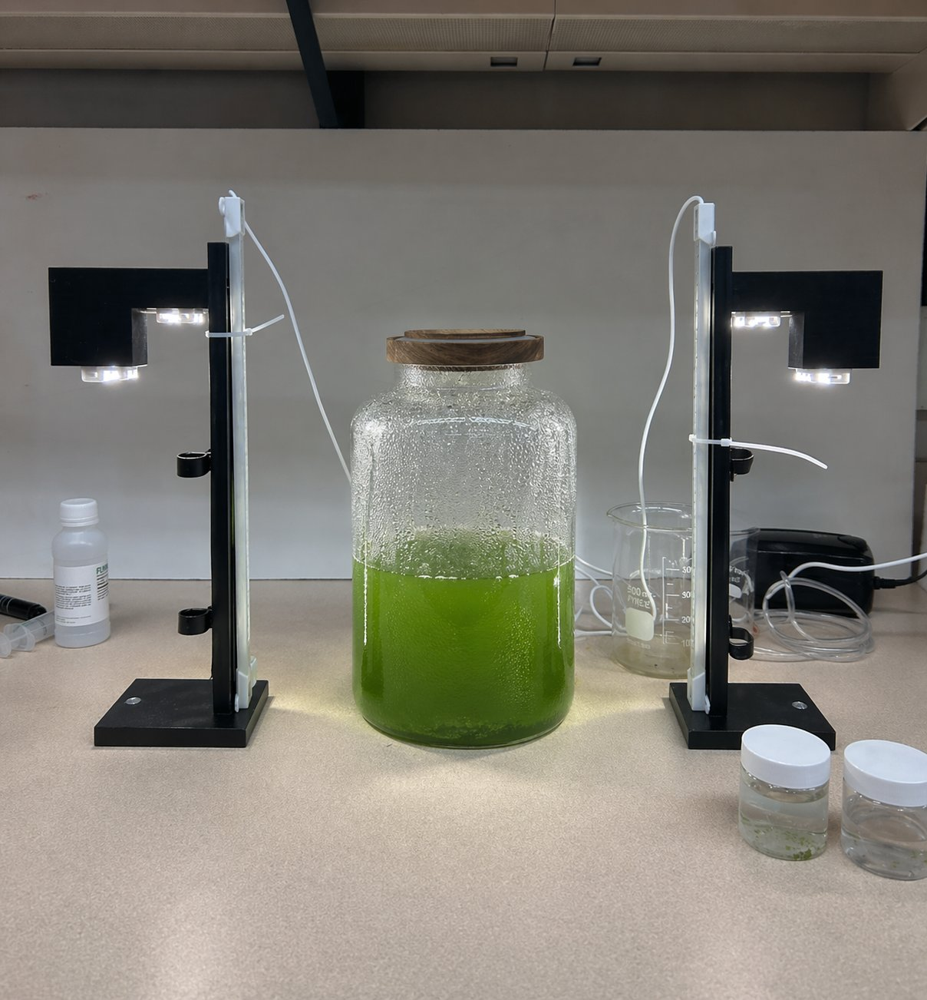
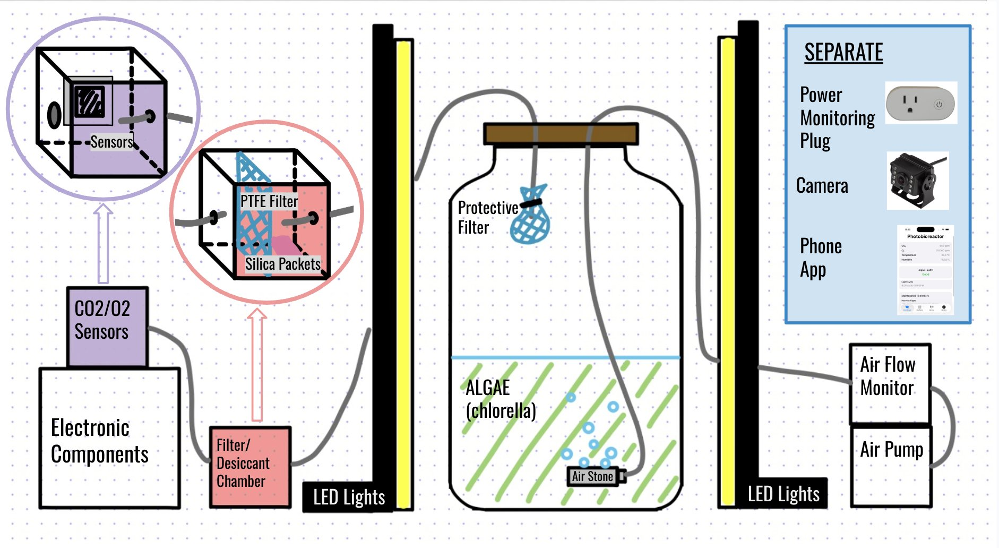
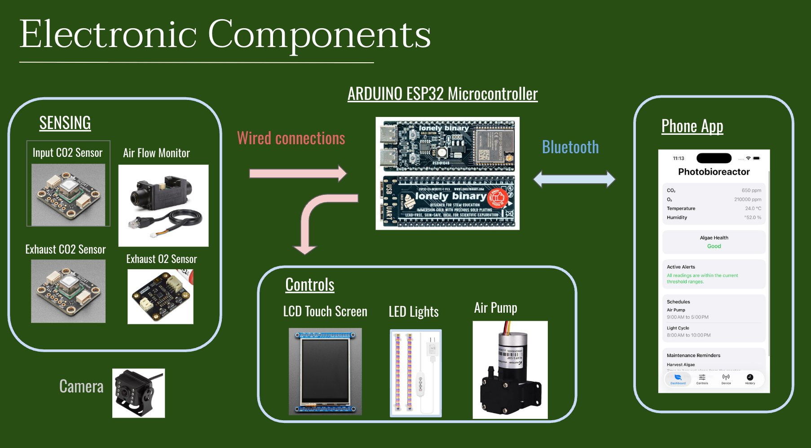
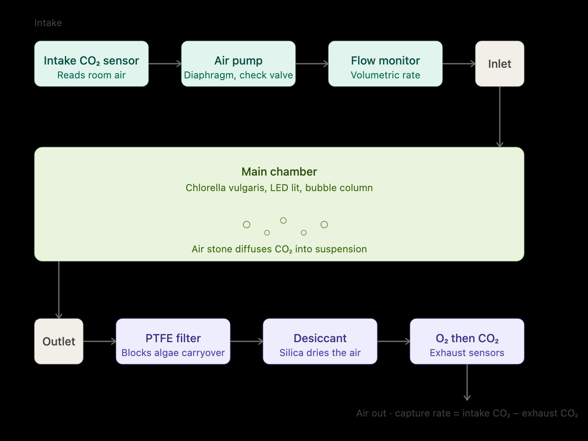
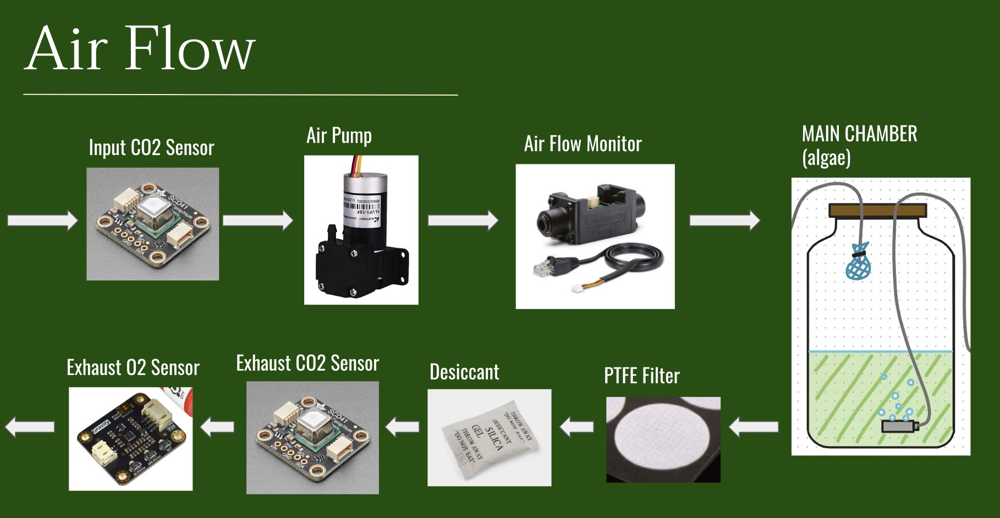

→ 01
Bubble Column
A vertical acrylic vessel aerated from the base. Rising bubbles deliver CO₂ and mix the culture without moving parts — low maintenance, low failure surface.
A bench-scale algal photobioreactor that cultivates Chlorella vulgaris to sequester carbon dioxide from the indoor air we breathe — turning a quiet, invisible pollutant into something observable, measurable, and alive.
Humans exhale roughly one kilogram of CO₂ per day. In sealed rooms — bedrooms, home offices, classrooms — concentrations climb past 1,000 ppm within hours, past 2,500 ppm overnight. Cognitive performance drops measurably at these levels, yet the dominant tools for air quality — mechanical ventilation, HEPA filtration — either demand infrastructure or ignore CO₂ entirely.
GRO-BOT asks a different question: can a living organism do what a filter cannot? Photosynthetic microalgae consume CO₂ faster by mass than terrestrial plants. A single desktop culture, properly maintained, can offset a meaningful fraction of a room's accumulation — silently, without ductwork, and visibly enough that residents can watch the work happen.
The U.S. Supreme Court ruled in 2007 that CO₂ is an air pollutant under the Clean Air Act — linked to warming, and to the declining performance of the humans breathing it. — Massachusetts v. EPA, 549 U.S. 497
EPA estimates of indoor air pollutant concentrations versus outdoor, in typical occupied spaces.
The CO₂ threshold above which decision-making performance statistically declines.
Chlorella vulgaris is a single-celled freshwater green alga that has been studied since the early 1900s — first as a protein source, then as a space-station oxygen system, then as a biofuel candidate, now as a climate tool. Its appeal is specific: it doubles in hours rather than days, tolerates a wide range of conditions, and fixes CO₂ directly into biomass without specialized nutrients beyond standard fertilizer components.
Two reactor archetypes informed our design. Open raceway ponds (as studied at Duke Marine Lab) are cheap but lose water, drift in composition, and cannot live indoors. Closed photobioreactors offer environmental control, contamination resistance, and minimal evaporation — at the cost of added complexity. GRO-BOT takes the closed path in a bubble column configuration: a transparent vertical vessel aerated from below.
A vertical acrylic vessel aerated from the base. Rising bubbles deliver CO₂ and mix the culture without moving parts — low maintenance, low failure surface.
Intake and exhaust air both pass through filters. Culture stays monospecific longer; contaminants and pests are excluded; evaporation is minimal over a 14-day run.
CO₂ is measured entering and leaving the chamber. For the first time in a desktop algae product, the user sees how much carbon the culture actually fixed.
A built-in camera time-lapses growth. A companion app exposes pH, temperature, humidity, airflow. The culture is legible — not hidden behind a white plastic shell.
Air enters through a CO₂ sensor at the intake and a second at the exhaust — so the reactor reports its own efficiency in real time. Between the two, a diaphragm pump drives filtered air through an air stone at the base of the culture, where the bubbles mix and deliver dissolved CO₂ to the algae.
On the exhaust side, a protective mesh keeps algae inside; a PTFE membrane blocks micro-droplets; silica desiccant dries the air before it reaches the CO₂ and O₂ sensors downstream. Lighting, pH, temperature and humidity are monitored continuously. An ESP32 microcontroller coordinates everything and streams to a companion phone app over Bluetooth.
A CO₂ sensor reads the incoming room air. The diaphragm pump pushes that air through a check valve and a filter before an air stone diffuses it into the culture as fine bubbles.
A clear acrylic vessel — roughly one liter — holds the Chlorella vulgaris suspension. Flanking LED panels supply photosynthetically active radiation on a programmable day/night cycle.
Outgoing air is filtered, dried, then measured for both O₂ and CO₂. The difference between intake and exhaust readings is the reactor's live capture rate — the headline number the product exposes.
An ESP32 microcontroller aggregates all sensor streams, drives the pump and LEDs on schedules, and pushes data over Bluetooth to a companion app. Total power draw is logged at the wall plug.
Eight weeks, three phases, one algae culture that had to stay alive throughout. The core design changed several times as we calibrated what the reactor should measure, what it should show, and how much of the complexity should be visible to a user opening a phone app.
Literature review on C. vulgaris cultivation; benchmarking against AlgenAir Aerium and AlGreen VAYU; selection of bubble-column architecture over flat-panel; finalized system diagram and bill of materials.
Lighting rig, aeration loop, and sensor suite built out and calibrated in parallel. Baseline culture inoculated in sterile medium. First full-system assembly achieved end of week 4.
14-day continuous runs under controlled conditions. Sensor streams logged at minute resolution. Growth monitored via optical density, time-lapse video, and pH trajectory.
Quantitative comparison against reference direct-air-capture systems. Power-per-gram-CO₂ analysis. Final technical report and presentation.
Harvesting schedule and nutrient replenishment cycle. Open-source DIY guide with bill of materials and assembly instructions. Exploration of biomass reuse — compost, pigment extraction, bioplastic feedstock.
Design targets set at the project start, tracked against measured performance over successive runs. Figures represent specification targets; experimental validation is ongoing at time of writing.
Minimum target reduction between intake and exhaust CO₂ readings at baseline indoor concentration.
Target productivity of Chlorella vulgaris under our LED lighting regime and nutrient schedule.
Continuous runtime without human intervention after initial setup — the baseline experimental window.
Target total bill-of-materials including sensors, microcontroller, lighting, chamber, and pump subsystem.
Approximately 2–3 bathtubs worth of active algae culture. GRO-BOT at one liter handles a fraction of daily human output — but at a scale that fits on a desk.
A mature Neem absorbs ~137 g CO₂/day. Trees remain the long-horizon solution — but they do not fit indoors, do not report their own performance, and do not arrive within a week.





GRO-BOT is the work of four graduate and undergraduate students across Carnegie Mellon's Electrical & Computer Engineering, Biomedical Engineering, and Energy Science, Technology & Policy programs — developed over Spring 2026 for the course 18-360/760 Design Quest: AgTech.
Electrical & Computer Engineering, Biomedical Engineering. Leads mechanical design and physical fabrication of the reactor vessel and supporting components.
Electrical & Computer Engineering. Leads sensing and control systems — instrument integration, calibration, and firmware architecture.
Energy Science, Technology & Policy. Leads project coordination, data pipeline, and experimental design at the intersection of climate tech and social impact.
Electrical & Computer Engineering. Contributes to systems integration, instrumentation, and the broader sensing-to-control pipeline that ties hardware to the companion app.